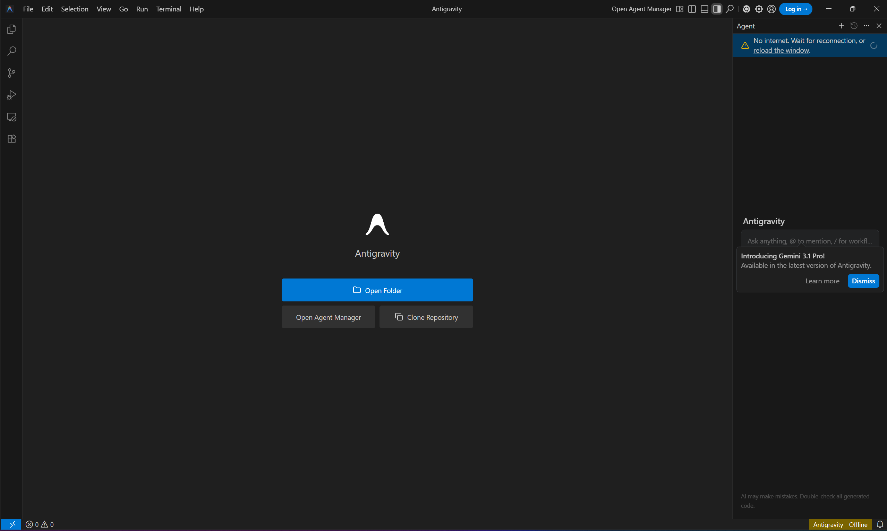
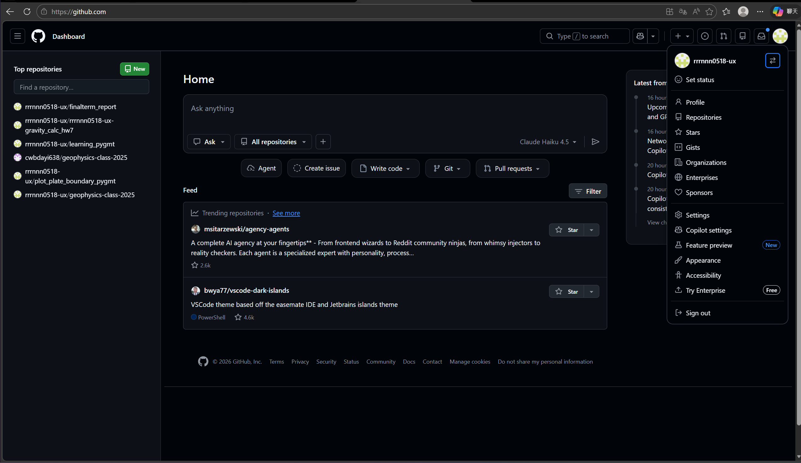
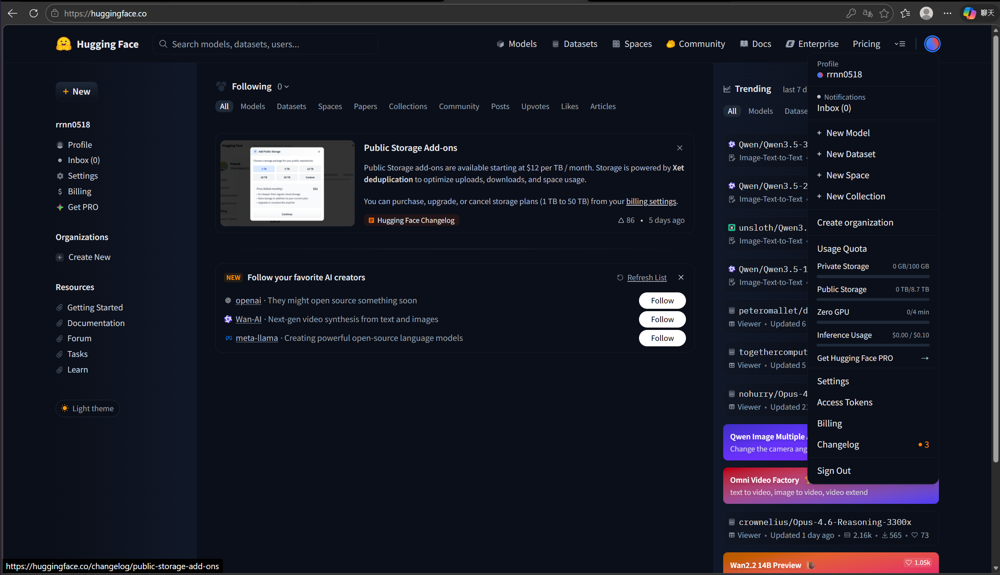

Antigravity 安裝截圖
成功安裝並啟用 Antigravity 軟體，這是本學期協助撰寫與修改程式碼的重要輔助工具。

GitHub 帳號申請
建立 GitHub 帳號，用於程式碼版本控制，並透過 GitHub Pages 部署靜態學習網站。

Hugging Face 帳號申請
建立 Hugging Face 帳號，為後續部屬 AI 互動問答與地震學展示工具做好準備。

成功安裝並啟用 Antigravity 軟體，這是本學期協助撰寫與修改程式碼的重要輔助工具。

建立 GitHub 帳號，用於程式碼版本控制，並透過 GitHub Pages 部署靜態學習網站。

建立 Hugging Face 帳號，為後續部屬 AI 互動問答與地震學展示工具做好準備。
